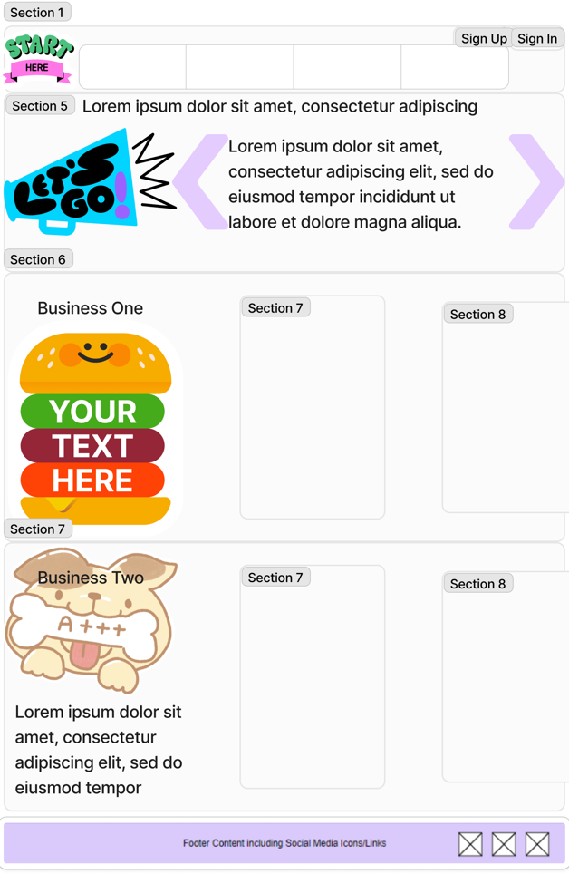

Site Name: Ureña's Chamber
The site name represents Ureña's people, commerce and its purpose.
Site Purpose
The purpose of the site is:
- To promote local commerce and business collaboration.
- To offer resources and events for economic and community development.
Scenarios
- What events is the chamber organizing this month to foster business networking?
- Where can I find contact information for the chamber's board of directors?
- What has been the population growth in the area?
Color Schema
The color scheme includes:
- Main color: #037ef3
- Secondary color: #f85a40
- Accent color 1: #00c16e
- Accent color 2: #7552cc
- Accent color 3: #0cb9c1
- Accent color 4: #f48924
- Accent color 5: #ffc845
- Neutral color 1: #52565e
- Neutral color 2: #caccd1
- Background color: #f3f4f7
Typography
The selected typography is:
- Font-family 1: Ubuntu, used throughout the site.
- Font-family 2: Georgia, used in specific sections for contrast.
Wireframe
Basic layout for the homepage in:
- Mobile view
- Desktop view
